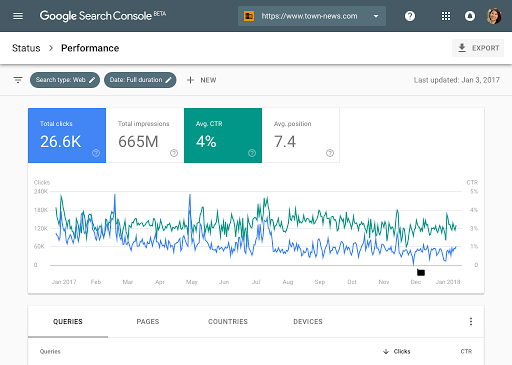

El comercio electrónico se ha convertido en un componente esencial de las transacciones de compra y venta. Sin embargo, abrir una tienda online no garantiza que una empresa logre vender. El consumidor primero debe encontrar la tienda, confiar en ella y completar la compra sin dificultades. Es en este proceso donde el marketing digital adquiere importancia, ya que permite atraer, interesar, convertir y fidelizar clientes mediante diferentes canales digitales.
Una empresa puede tener una tienda online completamente funcional, pero si los consumidores no la encuentran en Google, no conocen la marca o no confían en ella, es poco probable que se produzcan ventas.
El marketing digital aplicado al comercio electrónico utiliza diferentes estrategias para acompañar al consumidor durante todo el proceso de compra. Estas estrategias comienzan desde el momento en que una persona descubre la tienda, continúan cuando evalúa los productos y realiza una compra, y pueden mantenerse incluso después de completar la transacción.
El SEO consiste en optimizar una tienda online para mejorar su visibilidad en los resultados de los motores de búsqueda y generar tráfico orgánico. Además, las empresas pueden utilizar publicidad pagada para promocionar determinados productos y dirigir a los consumidores hacia sus plataformas de comercio electrónico.
Una persona busca un producto en Google. Una empresa como Amazon puede aparecer entre los resultados de manera orgánica mediante SEO o mediante un anuncio pagado. El usuario puede seleccionar el resultado y entrar directamente a la tienda online.
Las redes sociales permiten a las empresas promocionar productos, aumentar su visibilidad e interactuar directamente con los consumidores. También pueden utilizarse para presentar productos a nuevas audiencias mediante colaboraciones con creadores de contenido.
Una tienda puede utilizar Instagram o TikTok para publicar un video mostrando una nueva colección de productos y dirigir a las personas interesadas hacia su tienda online.
Atraer consumidores hacia una tienda no es suficiente. Una vez que una persona entra al sitio web, debe poder encontrar lo que busca y realizar una compra utilizando la menor cantidad de pasos posible. Una navegación complicada puede provocar que el consumidor abandone el sitio.
Amazon organiza sus productos mediante categorías, buscadores, filtros y recomendaciones, facilitando que los usuarios encuentren lo que necesitan.
No todos los consumidores que visitan una tienda completan una compra. El marketing digital permite volver a comunicarse con estas personas mediante estrategias como el retargeting y el email marketing.
El marketing digital también puede utilizarse después de completar una venta. Mantener una relación con los clientes existentes puede ayudar a generar nuevas compras y fortalecer la relación entre el consumidor y la empresa.
Una de las ventajas del marketing digital es que permite medir los resultados de las estrategias implementadas. Estos datos ayudan a determinar qué acciones están funcionando y cuáles deben modificarse.

En una tienda de ropa en línea, el marketing digital influye en la capacidad de atraer y mantener clientes. Para lograrlo, es importante presentar los productos de forma atractiva, ofrecer información clara y conocer las necesidades del público, asegurándose de promocionar artículos que sean de su interés.
La experiencia del consumidor también es fundamental para concretar ventas y fomentar futuras compras. Una página organizada, con información sobre tallas, materiales, precios y envíos, junto con una comunicación clara antes y después de la compra, genera confianza y facilita el proceso.
El éxito de una tienda virtual no depende únicamente de sus ventas, sino también de la satisfacción y fidelidad de sus clientes. Por ello, es importante analizar sus opiniones, evaluar los resultados y realizar mejoras continuas. En conclusión, el marketing digital requiere conocer al consumidor, adaptarse a sus necesidades y ofrecer una experiencia positiva que motive nuevas compras y recomendaciones.
Para mejorar los resultados dentro del comercio electrónico, es necesario desarrollar estrategias centradas en las necesidades y expectativas del consumidor digital. Esto implica analizar su comportamiento, comprender qué busca durante el proceso de compra y utilizar esa información para ofrecer una experiencia más personalizada, sencilla y eficiente. A partir de este enfoque, pueden incorporarse herramientas como motores de recomendación predictiva, agentes de compra virtuales y estrategias de Live Shopping, las cuales permiten orientar al consumidor, mostrar productos de manera más relevante y fortalecer la interacción con la marca.
La mejora de la experiencia digital también debe considerar elementos que reduzcan la incertidumbre y aumenten la confianza del consumidor. Entre estas alternativas se encuentran los probadores virtuales, las representaciones de productos en 3D, las políticas claras de devolución, la seguridad durante el proceso de compra, la transparencia en los precios y las reseñas de otros consumidores. En conjunto, estas estrategias permiten ofrecer una experiencia más completa antes, durante y después de la compra, facilitando la toma de decisiones y fortaleciendo la relación entre la empresa y el consumidor.
El análisis realizado demuestra que el marketing digital y el comercio electrónico funcionan como un sistema integrado. Una tienda puede tener una excelente estrategia de promoción, pero si la experiencia de compra es complicada, esa estrategia puede perder efectividad. Por esta razón, SEO, redes sociales, publicidad pagada, correo electrónico y otras herramientas deben trabajar de manera complementaria.
ADEN International Business School. (2026, 4 de septiembre). ¿Qué es el e-commerce marketing y para qué sirve?
Ver referenciaCollins, A. (2026, 3 de septiembre). Ecommerce marketing guide for online stores (2026). Shopify.
Ver referenciaDobrovolskyi, A. (s. f.). ¿Qué es un programa de fidelización? Loyallyst.
Ver referenciaGrow with Google. (s. f.). Foundations of digital marketing and e-commerce.
Ver referenciaLaila, N., Sukmaningrum, P. S., Ngah, W. A. S. W., Rosyidi, L. N., & Rahmawati, I. (2024). An in-depth analysis of digital marketing trends and prospects in small and medium-sized enterprises: Utilizing bibliometric mapping. Cogent Business & Management, 11(1), Article 2336565.
Ver referenciaMailchimp. (s. f.). Cómo convertir a los visitantes del sitio web en clientes.
Ver referenciaPhillips, T. (s. f.). What is SEO? A guide to understanding e-commerce SEO. DTC SEO Agency.
Ver referenciaSimonson, J. (2024, 2 de noviembre). E-commerce marketing: The ultimate guide. Forbes Advisor.
Ver referenciaSriram. (2026, 11 de agosto). E-commerce and digital marketing. upGrad.
Ver referenciaTiczon, R. (2024, 21 de mayo). 22 digital marketing strategies to boost your ecommerce sales. Verz Design.
Ver referencia